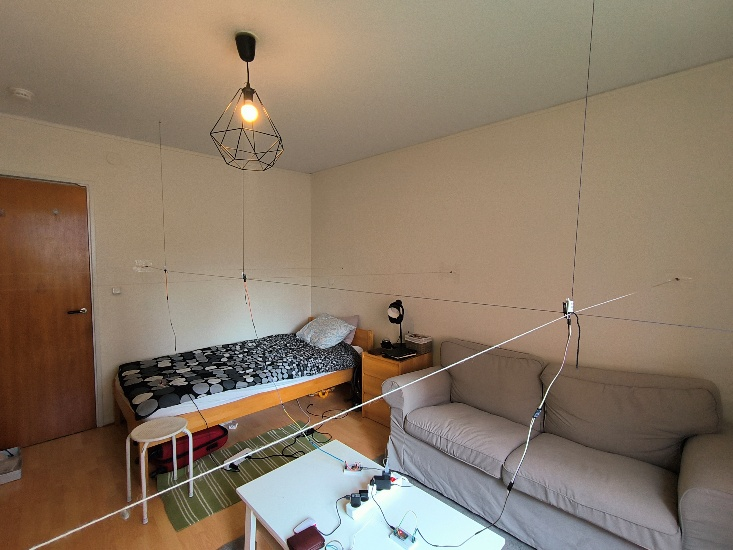
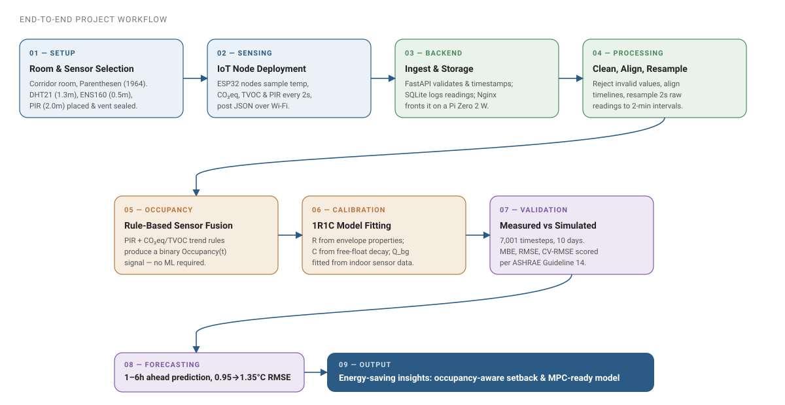
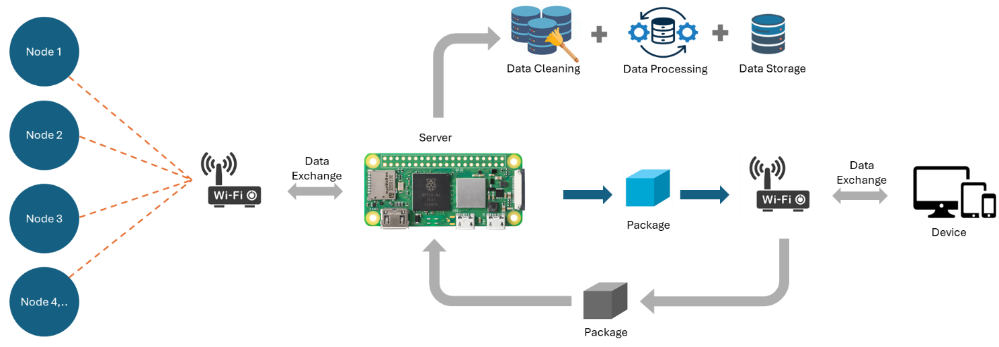
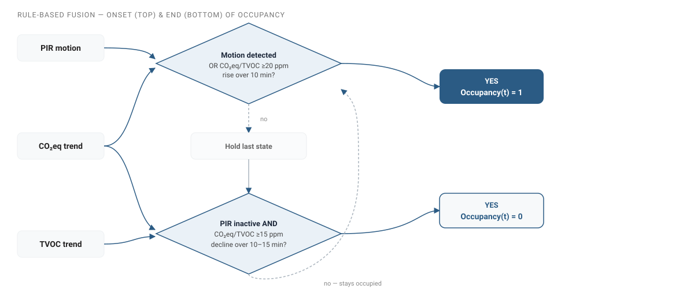
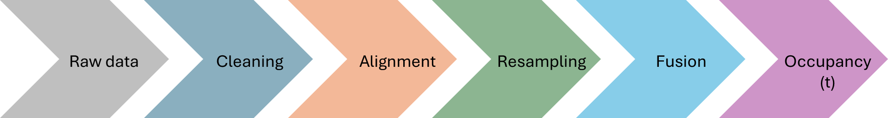
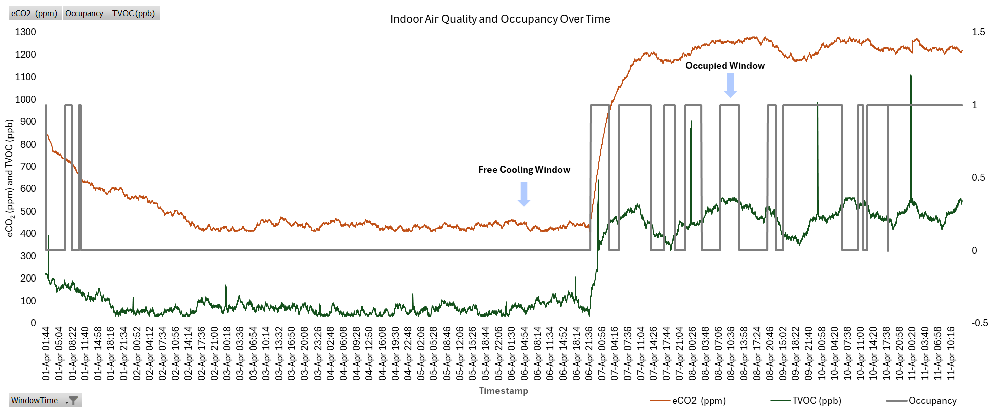
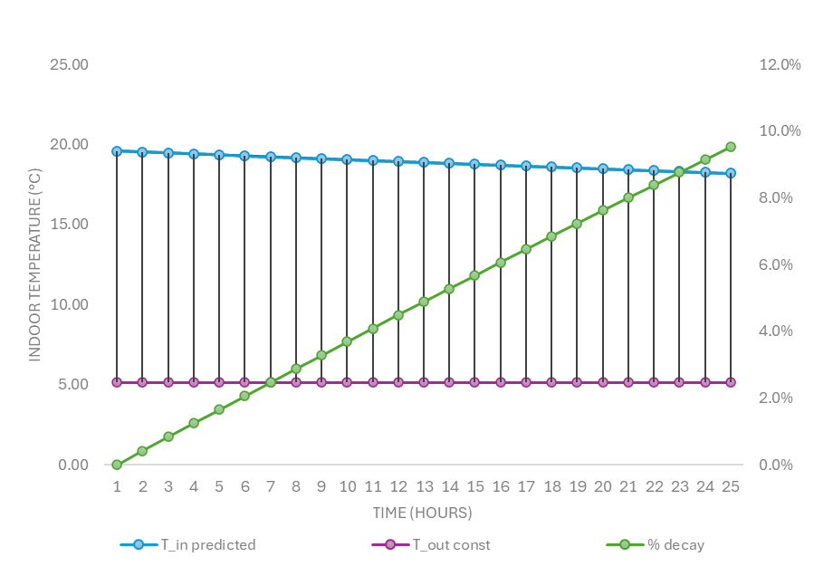
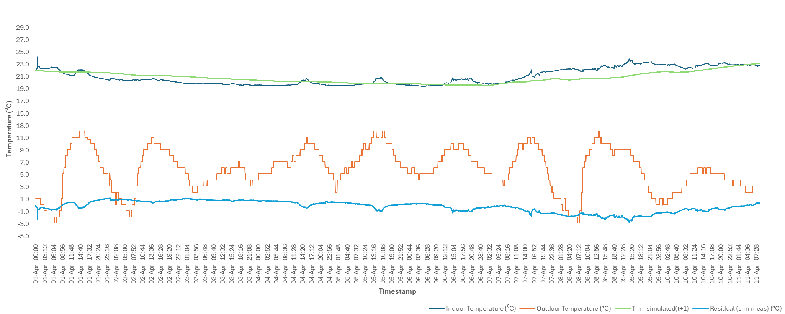
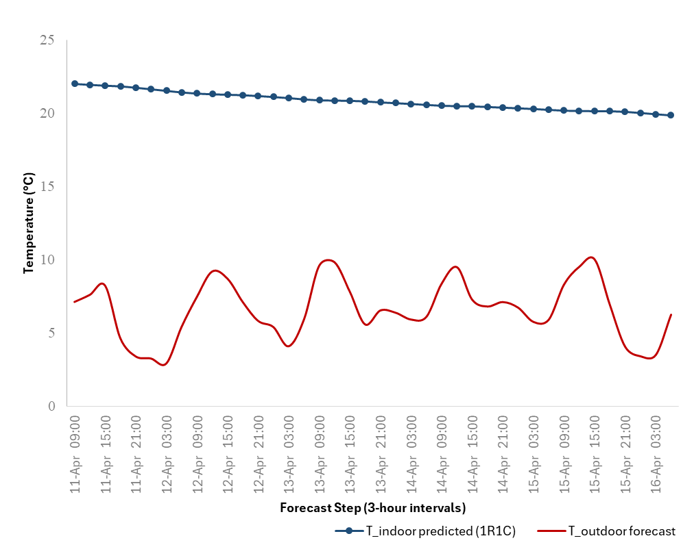

DIGITAL TWIN FOR EXISTING BUILDINGS
How much useful thermal information can you pull out of a small room using only cheap sensors, simple physics, and zero controlled experiments? Most existing buildings can't support a "real" digital twin — the dense, high-quality sensor networks that approach assumes are rarely there, and retrofitting for them is too costly. This thesis builds a lightweight alternative: an ESP32 + Raspberry Pi sensing stack, a rule-based occupancy-fusion method, and a first-order 1R1C thermal model, deployed for ten days in a real, occupied corridor room at Parenthesen student housing in Lund — no lab conditions, no artificial disturbances.

HYPOTHESES
Three claims structure the work. Accuracy tests whether a cheap, first-order twin is good enough for HVAC-related energy. Data improvement tests whether occupancy fusion and cleaning actually lift low-cost sensor streams. Practical use tests whether the twin can point to wasting patterns and operating decisions — not just fit a curve.
The digital twin will estimate HVAC-related energy use with acceptable accuracy against reference data.
Data-inference methods (occupancy estimation, missing-value reconstruction) will significantly improve raw low-cost sensor data.
The digital twin will identify energy-wasting patterns and support energy-efficient operating decisions.
PROJECT WORKFLOW
From sensor placement to energy-saving insight, the project runs as one continuous pipeline: real hardware feeds a lightweight backend, which feeds occupancy fusion and model calibration, which feeds validation and forecasting.

End-to-end pipeline from physical setup through occupancy fusion, 1R1C calibration, validation, and short-term forecast.
ROOM SELECTION & SETUP
The monitored space is a corridor room on the first floor of Parenthesen, a 1964 student-housing complex in Lund — ageing building stock rather than a modern, well-instrumented one, which is exactly the context this thesis targets. The room has one external, north-west-facing wall with a single window and otherwise internal partitions, keeping heat-transfer pathways simple enough for a single-zone 1R1C model.
Site, floor plan, sensor heights, and the sealed ventilation grille used during free-float calibration.
Sensor layout
Three DHT21 temperature points (P1–P3) run horizontally at 1.3 m, the ENS160 air-quality sensor sits centrally at 0.5 m, and the PIR sensor is wall-mounted at 2.0 m for a clear field of view. During the free-float calibration window, the ventilation grille was sealed to isolate envelope and thermal-mass behaviour from air exchange.
LOW-COST IOT SENSING SYSTEM
Each sensor node pairs an ESP32 microcontroller with a specific sensor — DHT21 for temperature, an ENS160 for CO₂-equivalent and TVOC, and a PIR motion sensor — and streams readings over Wi-Fi to a FastAPI backend on a Raspberry Pi Zero 2 W, backed by SQLite and fronted by Nginx. Nodes sampled every 2 seconds; readings were resampled to 2-minute intervals to match the RC model's timestep. The system ran continuously for the full campaign with no manual intervention.

Hardware-to-backend architecture: Wi-Fi nodes into the Pi, then cleaning, processing, and storage.
Assembled nodes
Physical stack and wiring for the DHT21, ENS160, and PIR nodes.
OCCUPANCY SENSOR-FUSION
Occupancy can't be measured directly without intrusive sensors, so this thesis fuses three indirect signals into one stable binary estimate: PIR for rapid motion detection, and CO₂eq/TVOC trends to confirm sustained presence once someone settles in. Raw readings pass through a fixed pipeline — cleaning, time alignment, resampling, then fusion — before becoming the Occupancy(t) signal fed into the thermal model. No machine learning or labelled training data is required. Across the ten-day validation window, the fusion logic classified 27.7% of timesteps as occupied — consistent with normal student-housing use.
Fusion logic

Onset: motion, or a 20 ppm CO₂eq/TVOC rise over 10 minutes. End: PIR inactive and a 15 ppm decline over 10–15 minutes.
Processing pipeline

Raw streams are cleaned, time-aligned, and resampled before fusion produces Occupancy(t).
Ten-day occupancy signal

eCO₂, TVOC, and fused occupancy over ten days, including a free-cooling window followed by occupied use. Occupied share: 27.7% of timesteps.
FIRST-ORDER 1R1C THERMAL MODEL
The room is represented as a single thermal zone: one resistance (R) for envelope heat loss, one capacitance (C) for thermal mass, driven by outdoor temperature and an occupancy-linked internal heat gain. R was estimated from envelope properties; C was calibrated from a free-float decay experiment. A single fitted background heat-flux term absorbs unmodelled gains like solar input and corridor spill-heat.
| Parameter | Value | Source |
|---|---|---|
| R | 0.218 K/W | Envelope properties |
| C | 3.96 × 10⁶ J/K | Free-float decay calibration |
| τ = R × C | 239.7 h (~10 days) | Derived time constant |
| Qbg | 45.08 W | Fitted background heat flux |
| Qocc | 104.4 W | Binary occupied internal-gain assumption |
Free-float calibration
With the ventilation sealed and no internal gains, the room's free-float decay toward outdoor temperature gives a clean read on thermal mass alone — this curve is what the calibrated capacitance C is fitted against.

Free-float indoor temperature decaying toward outdoor temperature, used to calibrate C.
VALIDATION
The simulated trace tracks the measured indoor temperature closely across the full ten days, including the slow cooling through empty nights and the gradual warming through occupied stretches. Accuracy splits by occupancy state: RMSE = 0.81 °C when the room is empty versus 1.15 °C when occupied, pointing to the binary 104.4 W internal-gain assumption as the main source of remaining error — not the envelope model itself.

Ten-day measured vs simulated indoor temperature, outdoor temperature, and residual. Occupied RMSE 1.15 °C; empty RMSE 0.81 °C.
SHORT-TERM FORECAST
Because the room's time constant is so long, the calibrated model keeps useful accuracy well past the ten-day calibration window: short-term forecasts over 1–6 hours degrade only gradually, from about 0.95 °C to 1.35 °C RMSE.

Indoor forecast against outdoor forecast over a five-day horizon, with comfort bounds. 1–6 h RMSE rises from ~0.95 °C to ~1.35 °C.
TAKEAWAYS
- A simple model can carry real accuracy. One resistor, one capacitor, and a single background heat-flux term keep 75.8% of a ten-day validation within ±1 °C — no controlled experiments, no expensive instrumentation.
- Occupancy uncertainty, not envelope physics, is the bottleneck. RMSE nearly doubles when occupied (1.15 °C) versus empty (0.81 °C), all traceable to the binary 104.4 W internal-gain assumption rather than the thermal model itself.
- A long time constant is an energy-saving lever. With τ ≈ 240 h, the room barely reacts to short outdoor swings — meaning setback-style heating during unoccupied periods (72.3% of the dataset) costs little in comfort and could save real energy.
- Rule-based fusion beats going straight to machine learning. Combining PIR with CO₂eq/TVOC trends gave a stable occupancy signal with no labelled training data — proportionate to a low-cost deployment, not over-engineered for it.
- Cheap hardware, real deployment. The entire stack — ESP32 nodes, Raspberry Pi Zero 2 W, FastAPI, SQLite, Nginx — ran continuously in an occupied room for ten days without disruption, for a total hardware cost of a few hundred euros.